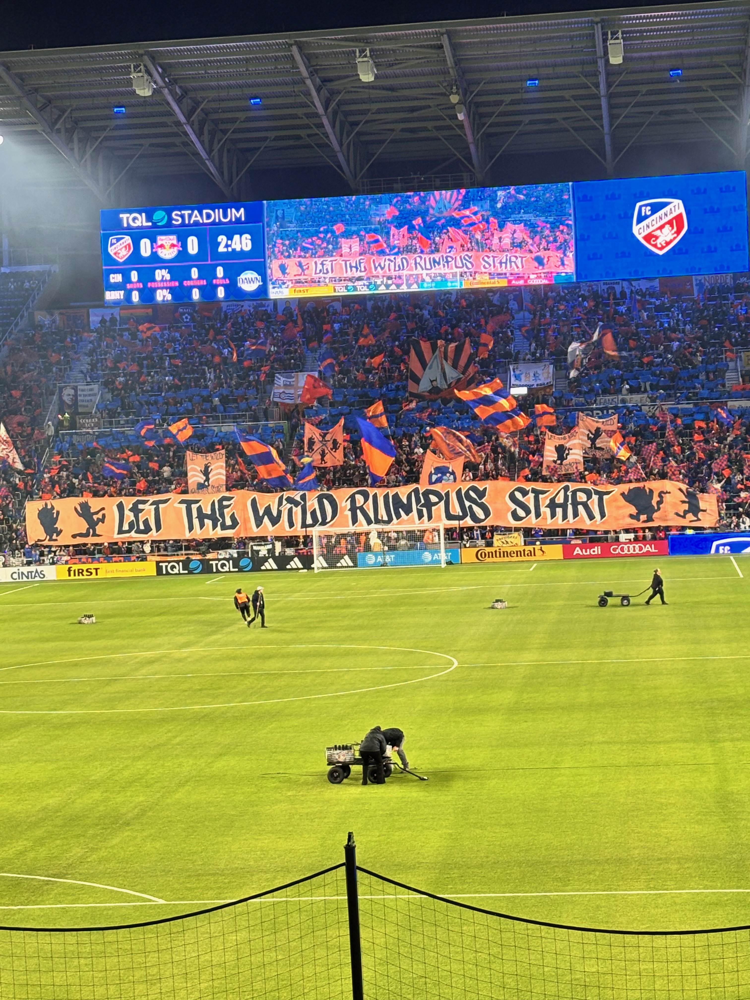
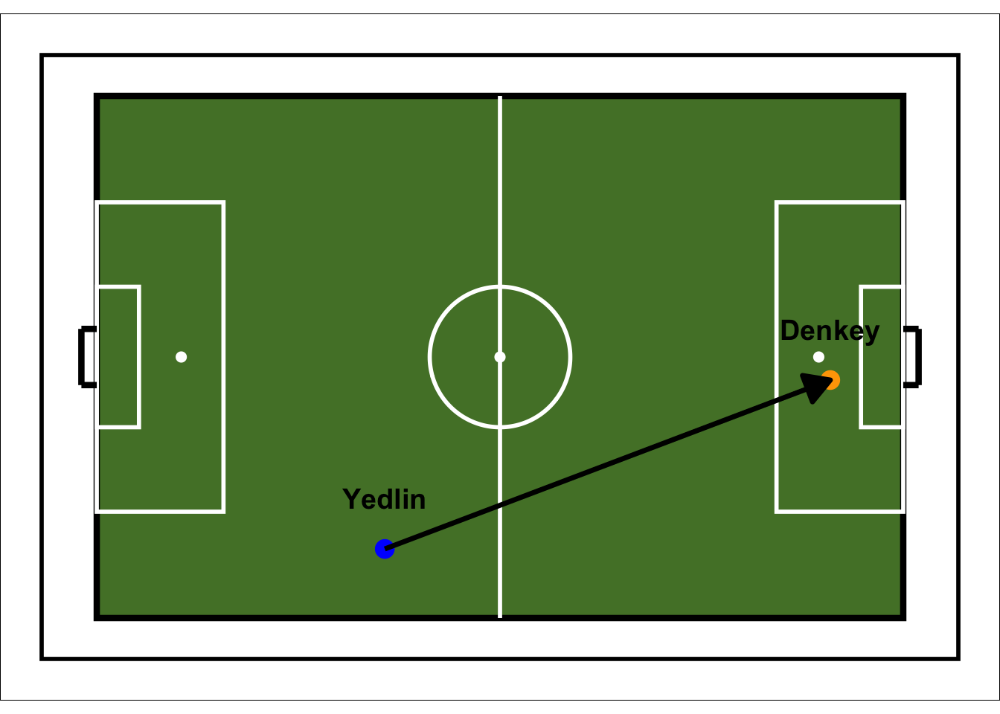

First Post: Who the Heck am I?
FC Cinicinatti 1 - NY Red Bulls 0: Breakdown
This breakdown will take a look at orange and blue’s home opener against NYRB. To begin, I want to discuss the non-footy things such as the new signings, buildup to the match, fan atmosphere, etc.
New Signings
Obviously, these two marque singings need no introduction. Kevin Denkey and Evander are players who are known for their class on the ball. Denkey scored 23 in 28 appearances in the 2023/24 season with his previous club, Cercle Brugge. Already this season, he has hit the ground running for the orange and blue netting 2 in 2 games. He is currently listed as +2500 to win the golden boot, which could be a huge under-estimation of his ability come the end of the season.
Evander, like Denkey, is a player who is known to be great with more potential to grow as he is only 26 years old. He comes to Cincy with nice experience in the MLS and abroad, where he even played in the UEFA Champions League in his time at FC Midtjylland. Last season while playing for the Portland Timbers, he had 34 goal contributions which put him second to a little known player by the name of Lionel Messi (haha).
All this to say, both signings have started well. I look forward to seeing these two form chemistry as the season progresses. I also love that this ownership group has shown a willingness to invest and obtain the best players to help us push towards an MLS cup or Concacaf Champions League.
#The Game Itself I was lucky enough to attend this game and before the game even began, the atmosphere was amazing. At the time of kickoff, the temperature was a cold 30-ish degrees but this did not tamper the fans, especially in the Bailey, even for a moment. The night began with an amazing firework display, where one of the techs even took a firework to the face (whom I hope is okay), and a nice tifo from the Bailey that read “Let the wild rumpus start”.

Now, diving a bit into the tactics on the day, we saw FCC line up in a 5-3-2 that tends to shift in a sword type formation in an 5-3-1-1. As expected, the team looked a bit rusty in the first half especially and it was clear that the players haven’t quite gelled yet (as is expected this early in the season with a new number 10 and 9). Over the next few games, the team will continue to get used to see Evander dropping into the half spaces to link up play instead of looking for Lucho in that role. They will also adjust to Denkey up top and how to best utlilize his abilites. Early on in this game, Denkey recieved a through ball and nearly scored the first goal of the season but was ultimately stopped by the woodwork. He later found his breakthrough with a beautiful pass from Deandre Yedlin from around midfield which he headed precisely over Carlos Coronel. The ggplot below represents this goal.
Warning: Using `size` aesthetic for lines was deprecated in ggplot2 3.4.0.
ℹ Please use `linewidth` instead.Warning: The `size` argument of `element_rect()` is deprecated as of ggplot2 3.4.0.
ℹ Please use the `linewidth` argument instead.
Final Thoughts
As we look forward to Motagua (Wednesday) and Philidelphia (Saturday) with a potential massive matchup again Tigres next week, I took a lot of positives from this game. Yes at times it was sloppy, the build up play was not as smooth as one would like to see, but it was the first game. As I stated above, gelling will take time especially with the abscence of the main conductor offensively for the past few years. However, I believe that Evander is more than capable of filling this role and forming an amazing partnership with Kevin Denkey. I am rushing to get this first report up before tomorrow’s game against Motagua and spent a majority of my spare time getting the site launched and creating a function to produce the plots above. That being said, I will produce more tables/plots showing off that previous games stats as I develop a nice workflow for these reports. # Next game prediction FC Cincinatti 3 - Motagua 1, Bring on Tigres!
Goodbye!
As always, if you read this report, thanks so much for stoping by. All for Cincy!